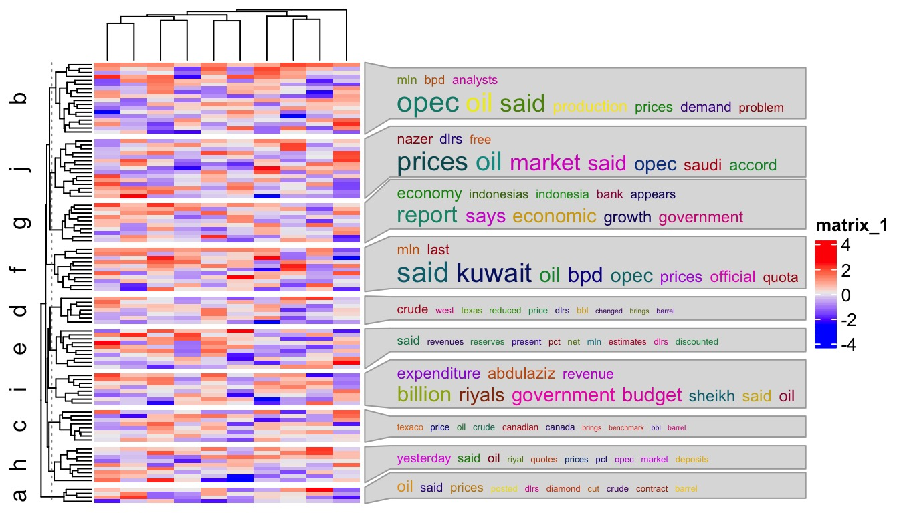
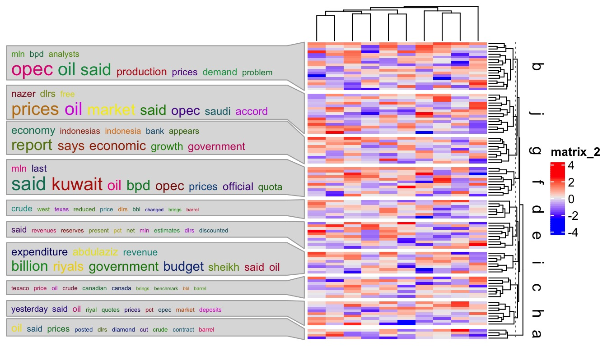
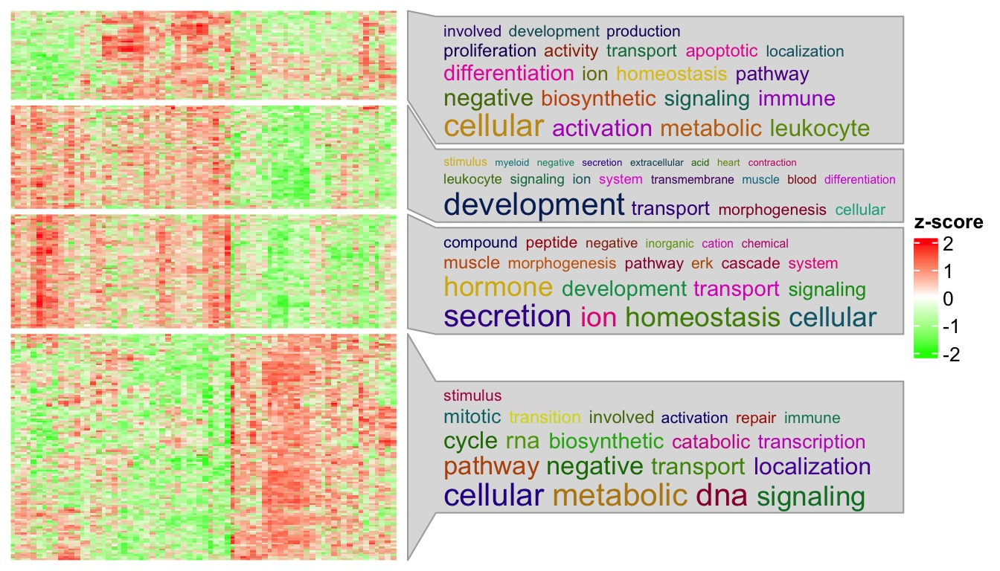
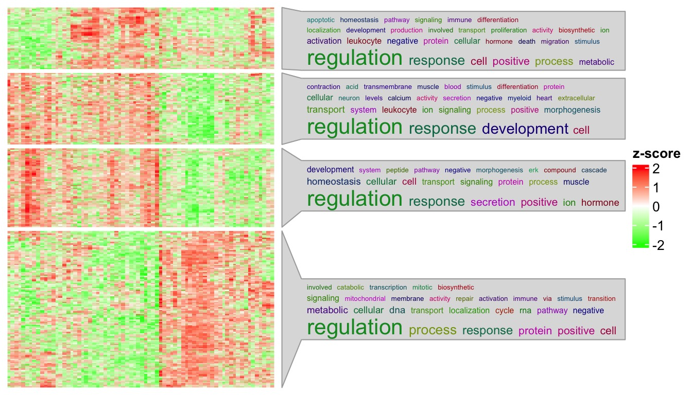
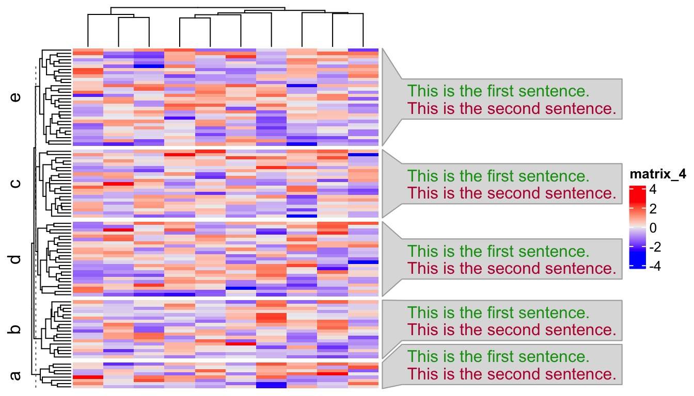
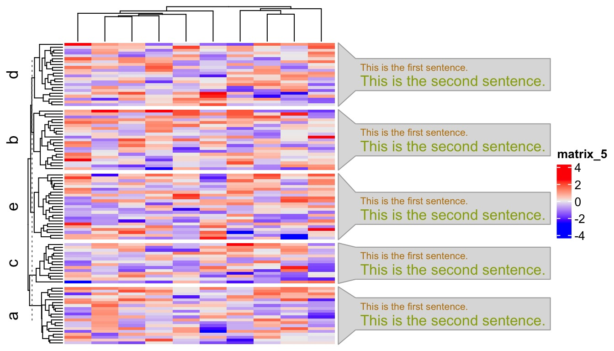

Word Cloud Annotation
Zuguang Gu (z.gu@dkfz.de)
2021-12-01
Source:vignettes/word_cloud_anno.Rmd
word_cloud_anno.RmdIn the plot generated by simplifyGO(), there is a word cloud annotation attached to the heatmap which shows the general biological functions of the GO terms in each cluster. In this vignette, I will demonstrate a general function anno_word_cloud() that generates word cloud annotations to work with the ComplexHeatmap package.
The anno_word_cloud() function basically a wrapper of two components: 1. constructing the word cloud (word_cloud_grob()) and 2. constructing an annotation (with ComplexHeatmap::anno_link()) that can be used in rowAnnotation() function.
anno_word_cloud() has two main arguments align_to and term. align_to defines how to align the annotation to the heatmap. Similar as in ComplexHeatmap::anno_link(), the value of align_to can be a list of row indices where each index vector in the list corresponds to a word cloud. The value of align_to can also be a categorical vector where rows with the same level correspond to a same word cloud. If align_to is a categorical vector and term is a list, names of term should overlap to the levels in align_to. When align_to is set as a categorical vector, normally the same value is set to row_split in the main heatmap so that each row slice can correspond to a word cloud. term defines the description texts used for constructing the word clouds. The value should have the same format as align_to. If align_to is a list, term should also be a list. In this case, the length of vectors in term is not necessarily the same as in align_to. E.g. length(term[[1]]) is not necessarily equal to length(align_to[[1]]. In other words, term[[i]] can contain arbitrary text as long as length(term) == length(align_to). If align_to is a categorical vector, term should only be a character vector with the same length as align_to.
Other arguments in anno_word_cloud() are straightforward to understand:
-
exclude_words: The words excluded from word cloud. -
max_words: Maximal number of words in each word cloud. -
word_cloud_grob_param: Graphic parameters send toword_cloud_grob(). The value should be a named list. -
fontsize_range: Range of the font size. The value is a vector of length two. -
bg_gp: Graphic parameters for controlling the background. -
side: Side of the annotation relative to the heatmap. The value should be either “right” or “left”.
In the first example, I generate 10 word clouds and attach to the heatmap which is split into 10 groups by rows.
library(tm)
data(crude)
term = lapply(crude$content, function(x) x$content)[1:10]
mat = matrix(rnorm(100*10), nrow = 100)
split = sample(letters[1:10], 100, replace = TRUE)
names(term) = letters[1:10] ## names of `term` must be the same as `unique(split)`
str(term, nchar.max = 80)## List of 10
## $ a: chr "Diamond Shamrock Corp said that\neffective today it had cut its"| __truncated__
## $ b: chr "OPEC may be forced to meet before a\nscheduled June session to "| __truncated__
## $ c: chr "Texaco Canada said it lowered the\ncontract price it will pay f"| __truncated__
## $ d: chr "Marathon Petroleum Co said it reduced\nthe contract price it wi"| __truncated__
## $ e: chr "Houston Oil Trust said that independent\npetroleum engineers co"| __truncated__
## $ f: chr "Kuwait\"s Oil Minister, in remarks\npublished today, said there"| __truncated__
## $ g: chr "Indonesia appears to be nearing a\npolitical crossroads over me"| __truncated__
## $ h: chr "Saudi riyal interbank deposits were\nsteady at yesterday's high"| __truncated__
## $ i: chr "The Gulf oil state of Qatar, recovering\nslightly from last yea"| __truncated__
## $ j: chr "Saudi Arabian Oil Minister Hisham Nazer\nreiterated the kingdom"| __truncated__
library(ComplexHeatmap)
library(simplifyEnrichment)
Heatmap(mat, row_split = split,
right_annotation = rowAnnotation(wc = anno_word_cloud(split, term))
)
The value for the first argument of anno_word_cloud() can also be explicitly converted into a list:
align_to = split(seq_along(split), split)
Heatmap(mat, row_split = split,
right_annotation = rowAnnotation(wc = anno_word_cloud(align_to, term))
)Argument side can be set to "left" to put the annotation on the left of the heatmap:
Heatmap(mat, row_split = split, row_dend_side = "right", row_title_side = "right",
left_annotation = rowAnnotation(wc = anno_word_cloud(split, term, side = "left"))
)
In previous examples, font sizes are mapped to word frequencies. To make it more general, term can be set to a list of “keywords data frames” where each data frame has two columns: a column for keywords and a column for numeric values that will be mapped to font sizes of keywords.
term = lapply(letters[1:10], function(x) {
data.frame(LETTERS[1:10], 1:10)
})
names(term) = letters[1:10]
Heatmap(mat, row_split = split,
right_annotation = rowAnnotation(wc = anno_word_cloud(split, term))
)
Specifically for GO terms, users do not need to provide the full GO descriptions, instead, they can only provide the GO IDs and the descriptions will be automatically extracted internally. In this case, users can use the helper function anno_word_cloud_from_GO() and set the GO ID list via the go_id argument. The format of go_id is similar as term in anno_word_cloud(), either a list of GO IDs or as a vector. Again note, if go_id is a list, e.g. length(go_id[[1]]) is not necessarily equal to length(align_to[[1]].
To make the word clouds more meaningful, additionally enrichment via Fisher’s Exact test is applied on keywords compared to background GO vocabulary. The significance of enrichment corresponds to the keyword font size.
The next example visualizes an gene expression matrix where rows are split into three groups by k-means clustering. GO enrichment analysis was applied to the genes in the three groups separately. Variable km contains the k-means classification. go_list contains list of IDs of significant GO terms.
load(system.file("extdata", "golub_sig_go.RData", package = "simplifyEnrichment"))
head(km)## [1] 3 1 4 4 3 3
str(go_list)## List of 4
## $ 1: chr [1:160] "GO:0033993" "GO:0009725" "GO:0014070" "GO:0019725" ...
## $ 2: chr [1:784] "GO:1903047" "GO:0006259" "GO:0044772" "GO:0044770" ...
## $ 3: chr [1:241] "GO:0051050" "GO:0008015" "GO:0003013" "GO:0009725" ...
## $ 4: chr [1:732] "GO:0002274" "GO:0002366" "GO:0002263" "GO:0036230" ...Just make sure names of go_list should correspond to the levels in km. Adding word cloud annotations for the enriched GO terms is very straightforward:
library(circlize)
Heatmap(t(scale(t(sig_mat))), name = "z-score",
col = colorRamp2(c(-2, 0, 2), c("green", "white", "red")),
show_row_names = FALSE, show_column_names = FALSE,
row_title = NULL, column_title = NULL,
show_row_dend = FALSE, show_column_dend = FALSE,
row_split = km) +
rowAnnotation(go = anno_word_cloud_from_GO(km, go_list, max_words = 30))## Perform keywords enrichment for 4 GO lists...
Note you can still set stat = "count" to map word frequency to the font size of keywords.
Heatmap(t(scale(t(sig_mat))), name = "z-score",
col = colorRamp2(c(-2, 0, 2), c("green", "white", "red")),
show_row_names = FALSE, show_column_names = FALSE,
row_title = NULL, column_title = NULL,
show_row_dend = FALSE, show_column_dend = FALSE,
row_split = km) +
rowAnnotation(go = anno_word_cloud_from_GO(km, go_list, max_words = 30, stat = "count"))
Now there might be users who want to say: I don’t actually need the word clouds, while I simply want to list key pathways in each cluster. This can be treated as a special case of word cloud where each word (or in general “a phrase as a word”) has value of 1 associated. Users need to specify several more arguments in anno_word_cloud(), as shown in the following example. Here add_new_line controls whether to list each sentence in separated lines. value_range and fontsize_range controls the size of the text. Note the defaults of these two arguments work well when font sizes are mapped to word frequencies or significance from keywords enrichment, but if the values are of other types, you might need to manually reset them.
mat = matrix(rnorm(100*10), nrow = 100)
split = sample(letters[1:5], 100, replace = TRUE)
term = lapply(letters[1:5], function(x) {
data.frame(c("This is the first sentence.", "This is the second sentence."), c(1, 1))
})
names(term) = letters[1:5]
Heatmap(mat, row_split = split,
right_annotation = rowAnnotation(wc = anno_word_cloud(split, term,
add_new_line = TRUE, value_range = c(1, 1), fontsize_range = c(10, 10)))
)
The sentences can also have different font size, just set values in the second column of the data frames in term:
term = lapply(letters[1:5], function(x) {
data.frame(c("This is the first sentence.", "This is the second sentence."), c(1, 2))
})
names(term) = letters[1:5]
Heatmap(mat, row_split = split,
right_annotation = rowAnnotation(wc = anno_word_cloud(split, term,
add_new_line = TRUE, value_range = c(1, 2), fontsize_range = c(8, 12)))
)